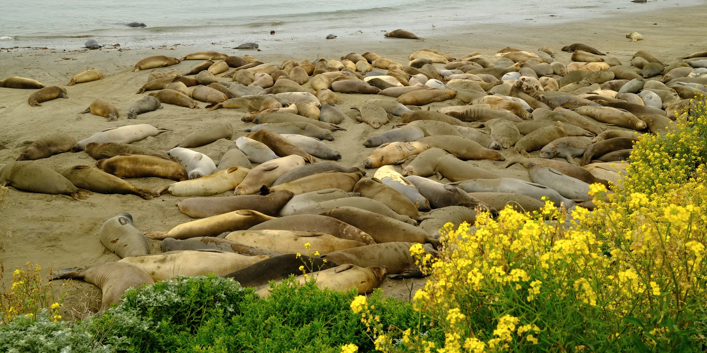
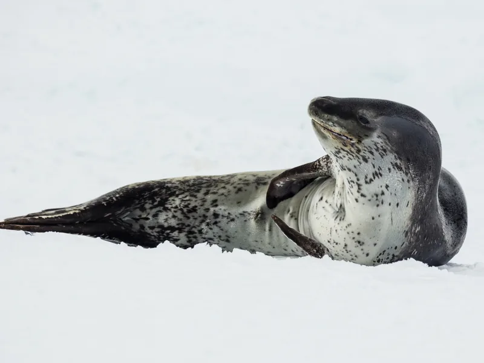
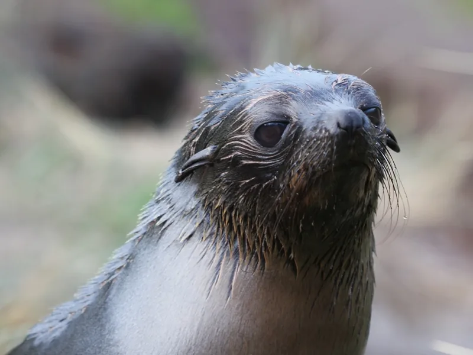
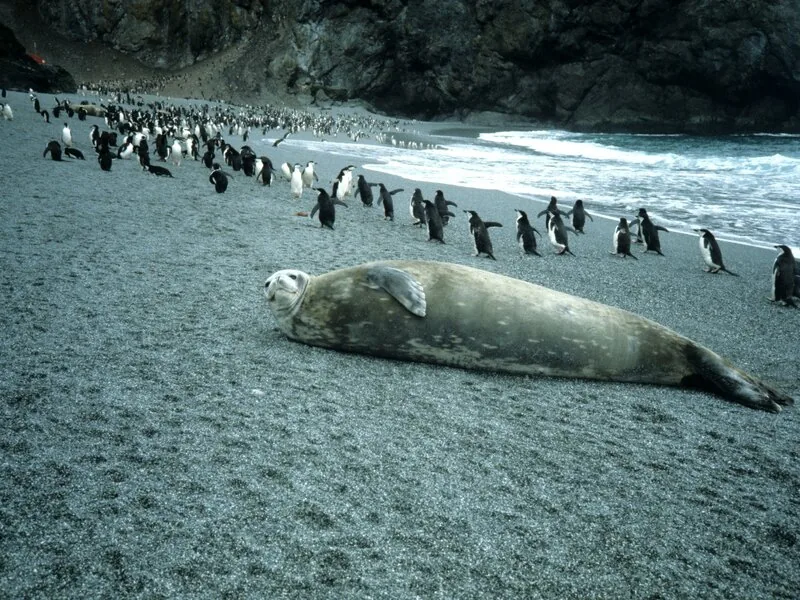

Blog
Novedades y curiosidades sobre las focas.
Novedades recientes

La foca leopardo, una cazadora experta
Es una de las depredadoras más grandes de la Antártida, capaz de cazar pingüinos y otras focas.

Los primeros meses de un lobo fino
Las crías dependen de su madre durante casi un año antes de aprender a cazar solas.

Focas y pingüinos: vecinos de playa
En la Antártida comparten costa con distintas especies de pingüinos sin mayores conflictos.